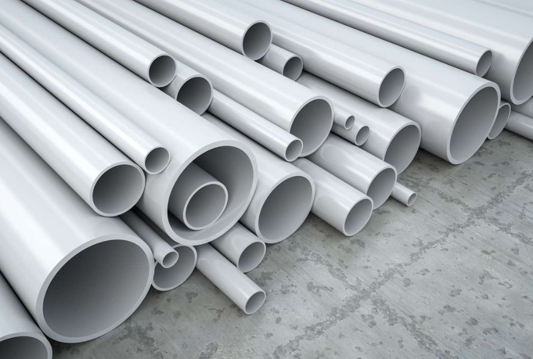
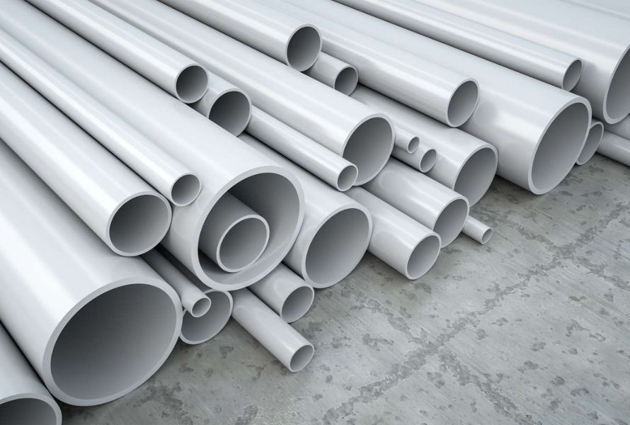

What Is Plastic?
Plastic is a polymer made from hydrocarbons. Common types of plastic and their chemical formulas include:
-
Polyethylene (PE): (CH₂CH₂)ₙ
-
Polypropylene (PP): (CH₂CHCH₃)ₙ
-
Polyvinyl chloride (PVC): (CH₂CHCl)ₙ
How Do We Make Plastic and What Are Its Advantages?
Plastic is usually made from natural materials like natural gas and crude oil. Due to its many advantages, such as high durability, resistance to breakage, and variety of colors, plastic is often used to replace natural materials like wood, metal, and glass. This has led to our extensive use and dependence on plastic. However, this widespread use and reliance have resulted in numerous negative impacts, such as pollution caused by plastic being carelessly discarded into our water bodies, which is a very unfortunate phenomenon.
 

Major Drawbacks and Dangers of Plastic
Plastic has a very high resistance to degradation, meaning it does not easily break down in nature. As a result, careless disposal of plastic can cause severe environmental pollution with unimaginable consequences. Once plastic enters water bodies, it leads to disastrous and irreversible outcomes. Large pieces of plastic can be mistaken for food by marine animals, causing dehydration, starvation, or even death if the plastic gets lodged in their throats or enters their digestive systems and cannot be digested. Additionally, large plastic waste breaks down into microplastic particles, which are hard to detect and can be ingested by fish. These fish then enter our food supply, posing risks to human health. The dangers of microplastic particles include potential cardiovascular damage, impacts on gut function (proven to cause gut barrier dysfunction in mice), and even the possibility of promoting rectal cancer metastasis.
Why Is Plastic in the Ocean So Hard to Remediate?
Once plastic reaches the seabed, cleanup becomes a massive challenge. We lack data on most of the seabed, making it difficult to determine the actual amount of plastic present. Additionally, some plastic has already integrated into the marine environment, posing significant challenges for cleanup without affecting marine life. Moreover, the cost of cleaning up plastic from the seabed is extremely high. Therefore, we should reduce our dependence on plastic, such as by decreasing the use of single-use plastic items like water bottles, plastic bags, and plastic utensils. Properly disposing of waste is crucial to prevent plastic from entering the oceans and threatening the marine ecosystem.
-
In conclusion, everyone should strive to protect the environment! Environmental protection is everyone's responsibility!
Sources
https://formlabs.com/cn/blog/guide-to-manufacturing-processes-for-plastics/
https://news.un.org/zh/story/2018/06/1010201
http://www.news.cn/tech/20240410/144f99e74b6246cf9d9afb2439b1d675/c.html
https://news.climate.columbia.edu/2022/10/13/how-do-we-clean-up-all-that-ocean-plastic/